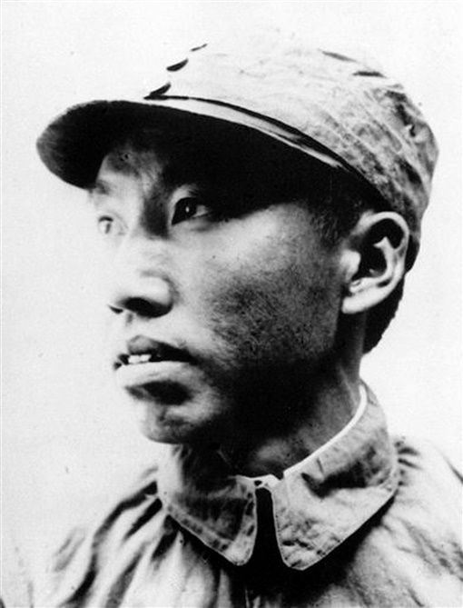

左权
左权（1905—1942），湖南醴陵人，中国共产党优秀的军事家，八路军副总参谋长。他在抗日战争中长期奋战，展现出卓越的军事才能和坚定的革命精神。1942年在山西辽县（今左权县）壮烈牺牲，年仅37岁，成为抗日战争时期牺牲的我军最高级别将领。
左权一生戎马倥偬，以坚毅果敢、忠诚无畏而著称。他不畏艰险，深入前线，指挥作战，为民族解放事业立下了卓越功勋。他的牺牲，彰显了共产党人舍生忘死、为国为民的伟大精神。
在家风方面，左权严于律己，生活简朴，对家庭成员严格要求。他教导子女要诚实守信，艰苦奋斗，不贪图享受，把个人理想融入国家和民族的事业之中。他以身作则，留下了宝贵的红色家风遗产。
左权的精神和家风深深感染了后人。今天的山西左权县，以他的名字命名，成为缅怀英雄、传承红色家风的重要教育基地。
← 返回中国地图